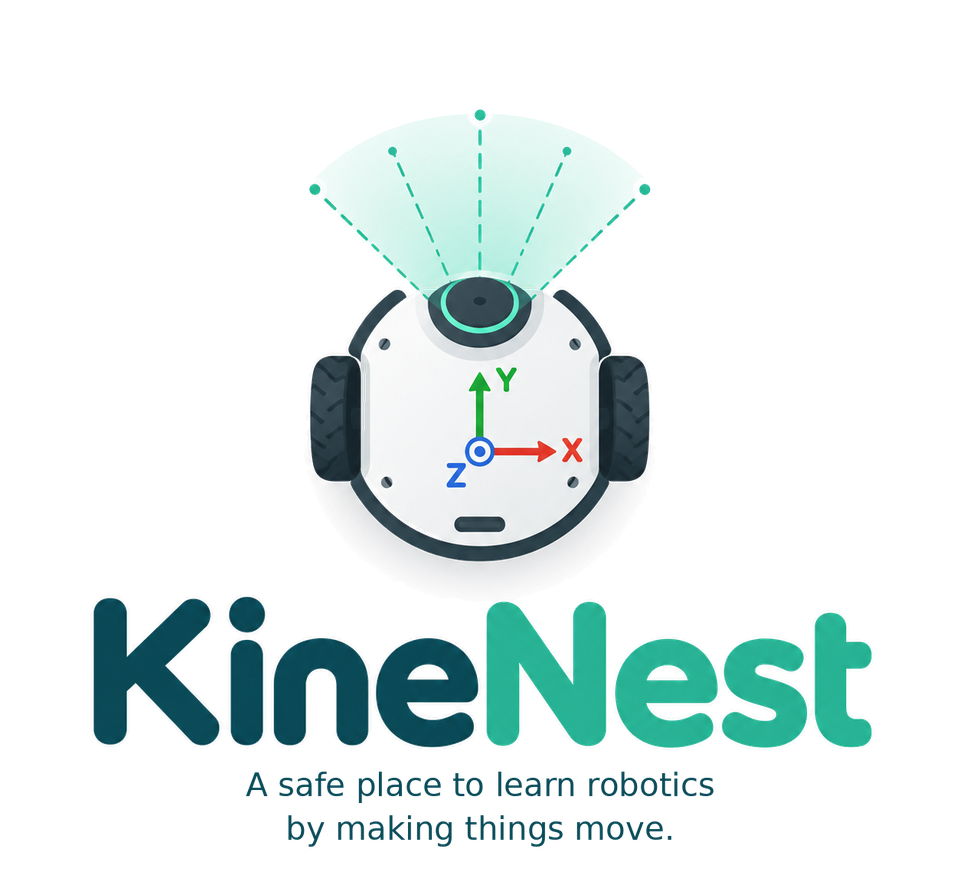
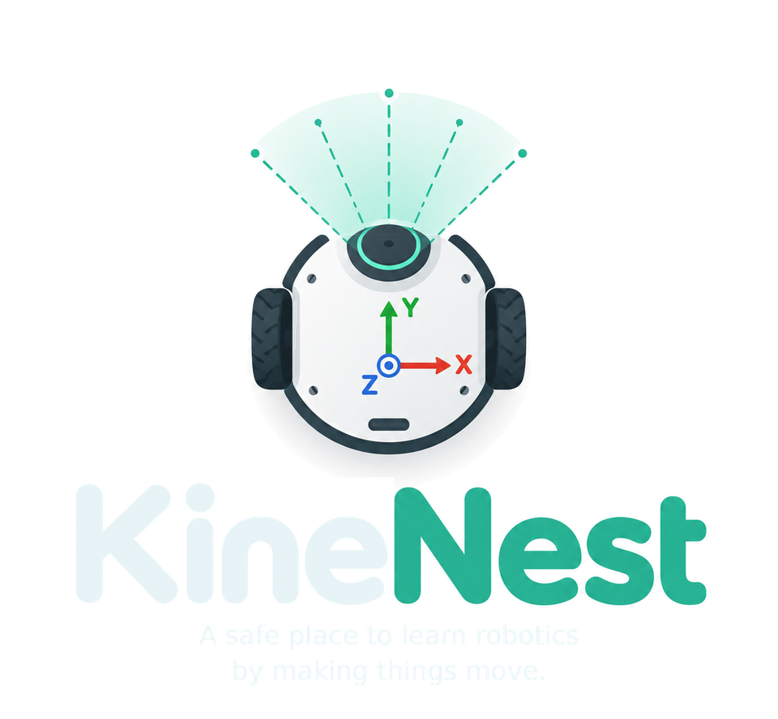

KineNest
A safe place to learn robotics by making things move.
Why KineNest?
“Kine” comes from kinematics and motion. “Nest” is a place to begin, experiment and learn before moving to real robots.
KineNest helps students reach robotics concepts before dealing with installations, workspaces and dependencies.
Write real Python and compile C++ throughout Sessions 2–6. Inspect topics, process sensors and control a robot in one browser tab.
KineNest is an independent open educational project created by Mario Malizia, with development assistance from ChatGPT by OpenAI.
Educational runtime
Python, NumPy, the C++ compiler and your algorithms are real. The rclpy/rclcpp-shaped APIs, CLI and sensors are educational implementations for these exercises.
No DDS, full QoS, TF history, native OpenCV, Gazebo, RViz, Nav2, SLAM or native package builds run here.
KineNest currently models the latest planar transform. Real tf2 also supports 3D transforms and time history.
Assessment and privacy
Checks observe behaviour and accept multiple solutions. They support practice, not secure grading.
No account or application backend. No analytics. Preferences stay in your browser. Runtime assets download only when needed.
Stop terminates the execution worker, including infinite loops. Each tab has a separate world.
Licence and independence
Original code and lessons use Apache-2.0. Third-party components retain their own terms.
KineNest teaches concepts and workflows used with ROS™ 2.
ROS is a trademark of Open Source Robotics Foundation, Inc. KineNest is not affiliated with or endorsed by Open Robotics.
Support
KineNest is free and open source. Optional contributions help support development and maintenance.
Build information
Loading build information…